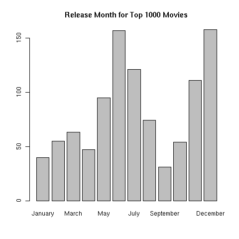

Dates, Summaries and Functions
1 Using Dates in R
Dates on computers have been the source of much anxiety, especially at the
turn of the century, when people felt that many computers wouldn't understand
the new millenium. These fears were based on the fact that certain programs
would store the value of the year in just 2 digits, causing great confusion
when the century "turned over". In R, dates are stored as they have traditionally
been stored on Unix computers - as the number of days from a reference date,
in this case January 1, 1970, with earlier days being represented by negative
numbers. When dates are stored this way, they can be manipulated like any other
numeric variable (as far as it makes sense). In particular, you can compare or
sort dates, take the difference between two dates, or add an increment of days,
weeks, months or years to a date. The class of such dates is Date and
their mode is numeric. Dates are created with as.Date, and formatted for
printing with format (which will recognize dates and do the right
thing.)
Because dates can be written in so many different formats, R uses a
standard way of providing flexibility when reading or displaying dates. A
set of format codes, some of which are shown in the table below, is used to
describe what
the input or output form of the date looks like. The default format for
as.Date is a four digit year, followed by a month, then a day, separated
by either dashes or slashes. So conversions like this happen automatically:
> as.Date('1915-6-16')
[1] "1915-06-16"
> as.Date('1890/2/17')
[1] "1890-02-17"
The formatting codes are as follows:
| Code | Value |
| %d | Day of the month (decimal number) |
| %m | Month (decimal number) |
| %b | Month (abbreviated) |
| %B | Month (full name) |
| %y | Year (2 digit) |
| %Y | Year (4 digit) |
(For a complete list of the format codes, see the R help page for
the strptime function.)
As an example of reading dates, the URL http://www.stat.berkeley.edu/classes/s133/data/movies.txt
contains the names, release dates, and box office earnings for around 700 of the
most popular movies of all time. The first few lines of the input file look like
this:
rank|name|box|date
1|Avatar|$759.563|December 18, 2009
2|Titanic|$600.788|December 19, 1997
3|The Dark Knight|$533.184|July 18, 2008
As can be seen, the fields are separated by vertical bars, so
we can use read.delim with the appropriate sep= argument.
> movies = read.delim('http://www.stat.berkeley.edu/classes/s133/data/movies.txt',
+ sep='|',stringsAsFactors=FALSE)
> head(movies)
rank name box date
1 1 Avatar $759.563 December 18, 2009
2 2 Titanic $600.788 December 19, 1997
3 3 The Dark Knight $533.184 July 18, 2008
4 4 Star Wars: Episode IV - A New Hope $460.998 May 25, 1977
5 5 Shrek 2 $437.212 May 19, 2004
6 6 E.T. the Extra-Terrestrial $434.975 June 11, 1982
The first step in using a data frame is making sure that we know what we're
dealing with. A good first step is to use the sapply function to look
at the mode of each of the variables:
> sapply(movies,mode)
rank name box date
"numeric" "character" "character" "character"
Unfortunately, the box office receipts (box) are character, not
numeric. That's because R doesn't recognize a dollar sign ($) as being part
of a number. (R has the same problem with commas.) We can remove the dollar sign with the sub function, and
then use as.numeric to make the result into a number:
> movies$box = as.numeric(sub('\\$','',movies$box))
To convert the character date values to R Date objects, we can
use as.Date with the appropriate format:
in this case it's the month name followed
by the day of the month, a comma and the four digit year. Consulting the table
of format codes, this translates to '%B %d, %Y':
> movies$date = as.Date(movies$date,'%B %d, %Y')
> head(movies$date)
[1] "2009-12-18" "1997-12-19" "2008-07-18" "1977-05-25" "2004-05-19"
[6] "1982-06-11"
The format that R now uses to print the dates is the standard Date format,
letting us know that we've done the conversion correctly. (If we wanted to recover
the original format, we could use the format function with a format similar
to the one we used to read the data.)
Now we can perform calculations using the date. For example, to see the difference
in time between the release of Titanic and Avatar (2 very popular movies directed
by James Cameron), we could use:
> movies$date[movies$name == 'Avatar'] - movies$date[movies$name == 'Titanic']
Time difference of 4382 days
Even though the result prints out as a character string, it's actually
just a number which can be used any way a number could be used.
Now suppose we want to see the time difference in years. To convert days to
years, we can divide by 365.25. (The .25 tries to account for leap years.):
> diff = movies$date[movies$name == 'Avatar'] - movies$date[movies$name == 'Titanic']
> diff / 365.25
Time difference of 11.99726 days
We could either adjust the units attribute of this value or
use as.numeric to convert it to an ordinary number. (In R, an attribute
is additional information stored along with a variable.)
> diff = diff / 365.25
> attr(diff,'units') = 'years'
> diff
Time difference of 11.99726 years
> as.numeric(diff)
[1] 11.99726
Either way, it will be treated as an ordinary number when used in a calculation.
The Sys.Date function can be used to return the current date, so R can calculate
the time until any date you choose. For example, the midterm for this class is March 2, 2011:
> as.Date('2011-03-02') - Sys.Date()
Time difference of 28 days
Another way to create dates is with the ISOdate function. This function
accepts three numbers representing the year, month and day of the date that is
desired. So to reproduce the midterm date we could use
> midterm = ISOdate(2011,3,2)
> midterm
[1] "2011-03-02 12:00:00 GMT"
Notice that, along with the date, a time is printed. That's because
ISOdate returns an object of class POSIXt, not Date.
To make a date like this work properly with objects of class Date, you
can use the as.Date function.
Once we've created an R Date value, we can use the functions months,
weekdays or quarters to extract those parts of the date. For example,
to see which day of the week these very popular movies were released, we could use
the table function combined with weekdays:
> table(weekdays(movies$date))
Friday Monday Saturday Sunday Thursday Tuesday Wednesday
753 10 7 11 39 22 164
Notice that the ordering of the days is not what we'd normally expect. This
problem can be solved by creating a factor that has the levels in the
correct order:
> movies$weekday = factor(weekdays(movies$date),
+ levels = c('Monday','Tuesday','Wednesday','Thursday','Friday','Saturday','Sunday'))
Now we can use weekday to get a nicer table:
> table(movies$weekday)
Monday Tuesday Wednesday Thursday Friday Saturday Sunday
10 22 164 39 753 7 11
Similarly, if we wanted to graphically display a chart showing which month of
the year the popular movies were released in, we could first create an
ordered factor, then use the barplot function:
> movies$month = factor(months(movies$date),levels=c('January','February','March','April','May','June','July','August','September','October','November','December'))
> barplot(table(movies$month),main='Release Month for Top 1000 Movies')

To do a similar thing with years, we'd have to create a new variable that represented
the year using the format function. For a four digit year the format
code is %Y, so we could make a table of the hit movies by year like this:
> table(format(movies$date,'%Y'))
1938 1939 1940 1942 1946 1950 1953 1955 1956 1959 1961 1963 1964 1965 1967 1968
1 1 1 2 1 1 1 1 1 1 2 1 2 3 2 2
1969 1970 1971 1972 1973 1974 1975 1976 1977 1978 1979 1980 1981 1982 1983 1984
1 4 2 3 2 8 3 4 4 5 12 9 7 10 12 12
1985 1986 1987 1988 1989 1990 1991 1992 1993 1994 1995 1996 1997 1998 1999 2000
10 12 13 13 23 19 21 26 19 20 32 26 29 37 41 44
2001 2002 2003 2004 2005 2006 2007 2008 2009 2010
43 47 53 55 48 54 43 53 57 47
2 Data Summaries
We've looked at a few graphical techniques for exploring data, and now we're going
to turn to a numerical one. Consider the question "Which day of the week has the
highest average box office for hit movies released on that day?". As a first step
in answering that question, it would be helpful to look at the mean box office
receipts for each of the days. If you look for a function to do that specific
task, you probably wouldn't find one, because R takes the more general approach of
providing a function that will allow you to calculate anything you want from vectors
of values broken down by groups. In fact, there are a variety of ways to do this.
The one we're going to look at is called aggregate. You pass aggregate
a vector or data frame containing the variables you want to summarize, a list of
the groups to summarize by, and the function you'd like to use for your summaries.
That way, a single function can perform many tasks, and, as we'll see when we
learn to write functions, it even allows R to do things that the developers of
R never imagined. For now, we'll stick to some built in functions, like
mean. To find the means for the box office receipts for each day of the
week, we could use a call to aggregate like this:
> aggregate(movies$box,movies['weekday'],mean)
weekday x
1 Monday 148.04620
2 Tuesday 110.42391
3 Wednesday 139.50965
4 Thursday 117.89700
5 Friday 112.24642
6 Saturday 91.18714
7 Sunday 140.45618
The same thing could be done to calculate other statistics, like median,
min, max, or any statistic that returns a single scalar value
for each group. Another nice feature of aggregate is that it if the
first argument is a data frame, it will calculate the statistic for each column
of the data frame. If we passed aggregate both the rank and
box, we'd get two columns of summaries:
> aggregate(movies[,c('rank','box')],movies['weekday'],mean)
weekday rank box
1 Monday 354.5000 148.04620
2 Tuesday 498.9545 110.42391
3 Wednesday 423.2561 139.50965
4 Thursday 493.7692 117.89700
5 Friday 521.7384 112.24642
6 Saturday 577.5714 91.18714
7 Sunday 338.1818 140.45618
To add a column of counts to the table, we can create a data frame from
the table function, and merge it with the aggregated results:
> dat = aggregate(movies[,c('rank','box')],movies['weekday'],mean)
> cts = as.data.frame(table(movies$weekday))
> head(cts)
Var1 Freq
1 Monday 10
2 Tuesday 22
3 Wednesday 164
4 Thursday 39
5 Friday 753
6 Saturday 7
To make the merge simpler, we rename the first column of cts to
weekday.
> names(cts)[1] = 'weekday'
> res = merge(cts,dat)
> head(res)
weekday Freq rank box
1 Friday 753 521.7384 112.24642
2 Monday 10 354.5000 148.04620
3 Saturday 7 577.5714 91.18714
4 Sunday 11 338.1818 140.45618
5 Thursday 39 493.7692 117.89700
6 Tuesday 22 498.9545 110.42391
Notice that the default behaviour of merge is to sort the columns
before merging, so that we've lost the order that the levels= argument
prescribed. The sort=FALSE argument to merge can be used
to prevent that:
> res = merge(cts,dat,sort=FALSE)
> head(res)
weekday Freq rank box
1 Monday 10 354.5000 148.04620
2 Tuesday 22 498.9545 110.42391
3 Wednesday 164 423.2561 139.50965
4 Thursday 39 493.7692 117.89700
5 Friday 753 521.7384 112.24642
6 Saturday 7 577.5714 91.18714
3 Functions
As you've already noticed, functions play an important role in R. A very
attractive feature of R is that you can write your own functions which
work exactly the same as the ones that are part of the official R release.
In fact, if you create a function with the same name as one that's already
part of R, it will override the built-in function, and possibly cause
problems. For that reason, it's a good idea to make sure that there's not
already another function with the name you want to use. If you type the
name you're thinking of, and R responds with a message like
"object "xyz" not found" you're probably safe.
There are several reasons why creating your own functions is a good idea.
- If you find yourself writing the same code over and over again as you work on
different problems, you can write a function that incorporates whatever it is
you're doing and call the function, instead of rewriting the code over and over.
-
All of the functions you create are saved in your workspace along with your data.
So if you put the bulk of your work into functions that you create, R will
automatically save them for you (if you tell R to save your workspace when your
quit.)
-
It's very easy to write "wrappers" around existing functions to make a custom
version that sets the arguments to another function to be just what you want.
R provides a special mechanism to "pass along" any extra arguments the other
function might need.
-
You can pass your own functions to built-in R functions like aggregate,
by, apply, sapply, lapply, mapply,
sweep and other functions to efficiently and easy perform customized
tasks.
Before getting down to the details of writing your own functions, it's a good idea
to understand how functions in R work. Every function in R has a set of arguments that
it accepts. You can see the arguments that built-in functions take in a number of ways:
viewing the help page, typing the name of the function in the interpreter, or using the
args function. When you call a function, you can simply pass it arguments,
in which case they must line up exactly with the way the function is designed, or
you can specifically pass particular arguments in whatever order you like by providing
the with names using the name=value syntax. You also can combine the two,
passing unnamed arguments (which have to match the function's definition exactly),
followed by named arguments in whatever order you like.
For example, consider the function read.table. We can view its argument list
with the command:
> args(read.table)
function (file, header = FALSE, sep = "", quote = "\"'", dec = ".",
row.names, col.names, as.is = !stringsAsFactors, na.strings = "NA",
colClasses = NA, nrows = -1, skip = 0, check.names = TRUE,
fill = !blank.lines.skip, strip.white = FALSE, blank.lines.skip = TRUE,
comment.char = "#", allowEscapes = FALSE, flush = FALSE,
stringsAsFactors = default.stringsAsFactors(), encoding = "unknown")
NULL
This argument list tells us that, if we pass unnamed arguments to
read.table, it will interpret the first as file, the next as
header, then sep, and so on. Thus if we wanted to read the
file my.data, with header set to TRUE and sep
set to ',', any of the following calls would be equivalent:
read.table('my.data',TRUE,',')
read.table(sep=',',TRUE,file='my.data')
read.table(file='my.data',sep=',',header=TRUE)
read.table('my.data',sep=',',header=TRUE)
Notice that all of the arguments in the argument list for read.table
have values after the name of the argument, except for the file argument. This
means that file is the only required argument to read.table; any of the
other arguments are optional, and if we don't specify them the default values that appear
in the argument list will be used.
Most R functions are written so the the
first few arguments will be the ones that will usually be used so that their
values can be entered without providing names, with the other arguments being optional.
Optional arguments can be passed to a function by position, but are much more commonly
passed using the name=value syntax, as in the last example of calling
read.table.
Now let's take a look at the function read.csv. You may recall that this
function simply calls read.table with a set of parameters that makes sense
for reading comma separated files. Here's read.csv's function definition,
produced by simply typing the function's name at the R prompt:
function (file, header = TRUE, sep = ",", quote = "\"", dec = ".",
fill = TRUE, comment.char = "", ...)
read.table(file = file, header = header, sep = sep, quote = quote,
dec = dec, fill = fill, comment.char = comment.char, ...)
<environment: namespace:utils>
Pay special attention to the three periods (...) in the argument list. Notice
that they also appear in the call to read.table inside the function's body.
The three dots mean all the arguments that were passed to the function that didn't
match any of the previous arguments in the argument list. So if you pass
anything other than file, header, sep, quote,
dec, or fill to read.csv, it will be part of the three dots;
by putting the three dots at the end of the argument list in the call to
read.table, all those unmatched arguments are simply passed along to
read.table. So if you make a call to read.csv like this:
read.csv(filename,stringsAsFactors=FALSE)
the stringsAsFactors=FALSE will get passed to read.table, even though
it wasn't explicitly named in the argument list. Without the three dots, R will not
accept any arguments that aren't explicitly named in the argument list of the function
definition. If you want to intercept the extra arguments yourself, you can include
the three dots at the end of the argument list when you define your function, and
create a list of those arguments inside the function body by refering to list(...).
Suppose you want to create a function that will call read.csv with a filename,
but which will automatically set the stringsAsFactors=FALSE parameter. For maximum
flexibility, we'd want to be able to pass other arguments (like na.strings=,
or quote=) to read.csv, so we'll include the three dots at the end of
the argument list. We could name the function read.csv and overwrite the built-in
version, but that's not a good idea, if for no other reason than the confusion it would
cause if someone else tried to understand your programs! Suppose we call the function
myread.csv. We could write a function definition as follows:
> myread.csv = function(file,stringsAsFactors=FALSE,...){
+ read.csv(file,stringsAsFactors=stringsAsFactors,...)
+ }
Now, we could simply use
thedata = myread.csv(filename)
to read a comma-separated file with stringsAsFactors=FALSE. You could still pass
any of read.table's arguments to the function (including stringsAsFactors=TRUE if
you wanted), and, if you ask R to save your workspace when you quit, the function will be
available to you next time you start R in the same directory.
File translated from
TEX
by
TTH,
version 3.67.
On 2 Feb 2011, 16:39.